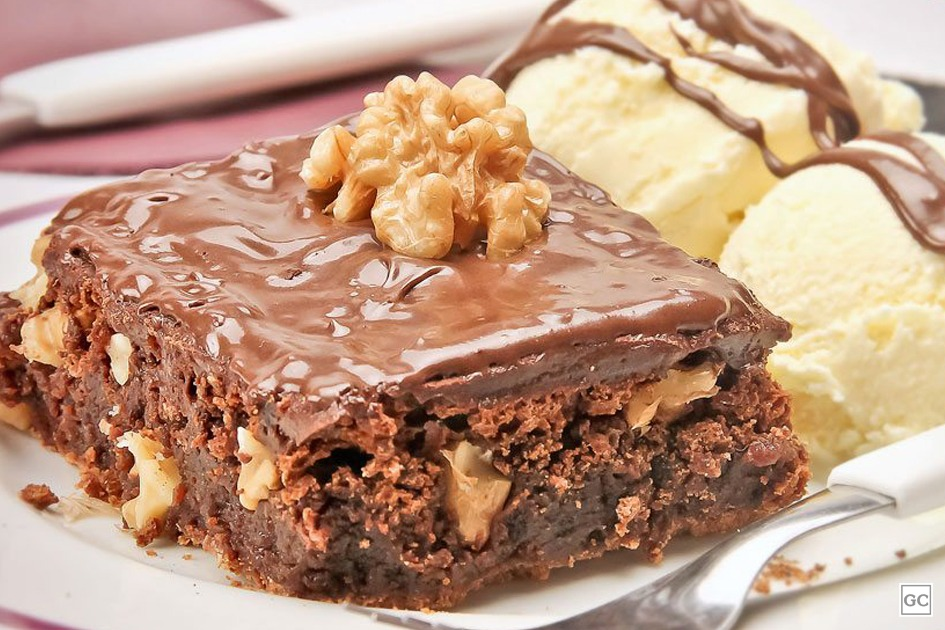
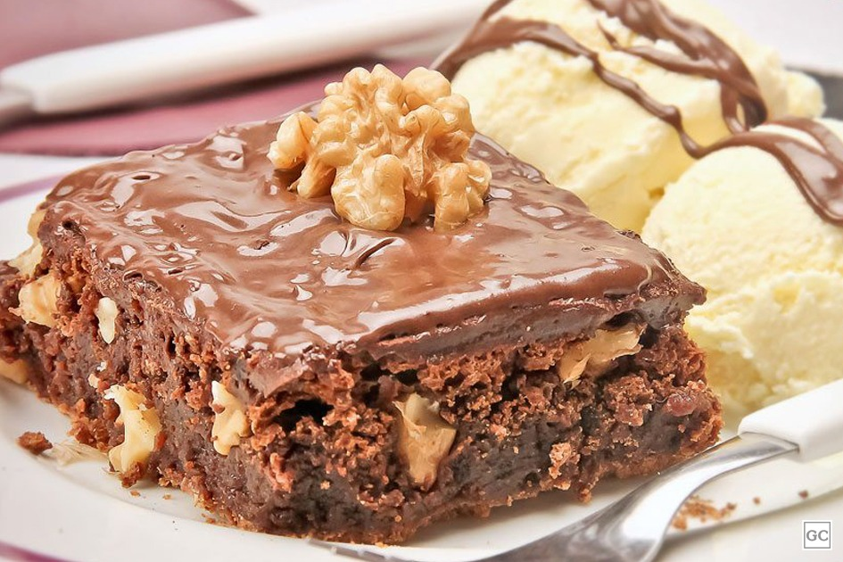

Fez a receita aí na sua casa? Então me conta!
Preencha o formulário abaixo. Eu vou adorar ver a sua versão do brownie!
Envie sua versão!

O brownie surgiu nos Estados Unidos no final do século XIX, e sua origem é cercada de curiosidades e lendas. Uma das versões mais populares conta que ele nasceu por acidente, quando uma cozinheira esqueceu de adicionar fermento à massa de um bolo de chocolate, resultando em um doce mais baixo, denso e úmido — e surpreendentemente delicioso. Outra história atribui sua criação ao Palmer House Hotel, em Chicago, em 1893, quando a esposa do dono pediu um doce pequeno, prático para comer com as mãos e com muito chocolate para ser servido na Feira Mundial daquele ano. Desde então, o brownie se tornou um clássico da confeitaria americana e ganhou o mundo com suas variações irresistíveis.
Escolhi essa receita porque adoro prepará-la! Além de ser prática e rápida, o sabor é simplesmente incrível. Fica uma delícia e é perfeita para aqueles dias em que a gente quer algo gostoso, sem perder muito tempo na cozinha. Sem contar que todo mundo adora quando faço!

| Ingredientes | Quantidade | Observações |
|---|---|---|
| Ovos | 3 | Você pode adicionar ingredientes como: nozes, castanhas, gotas de chocolate, Nutella ou até mesmo frutas! Um sorvete para acompanhar sempre vai bem também! Explore sua criatividade! |
| Açúcar | 1 xícara | |
| Manteiga derretida | 150 gramas | |
| Farinha de trigo | 1 xícara | |
| Nescau | 2 xícaras |
Deixo aqui algumas referências que podem te inspirar...
 

AVISO! É importante lembrar de peneirar todos os ingredientes secos, para que a massa fique homogênea.
Cake By The Ocean (DNCE)
Essa é uma ótima escolha para ouvir enquanto faz sua receita! A música é animada e cheia de energia positiva, o que pode fazer o processo de cozinhar ainda mais divertido! Fala sobre aproveitar o momento, se soltar e não se preocupar com as dificuldades, ótima para manter o clima descontraído enquanto você coloca as mãos na massa (literalmente!).
Preencha o formulário abaixo. Eu vou adorar ver a sua versão do brownie!
Envie sua versão!